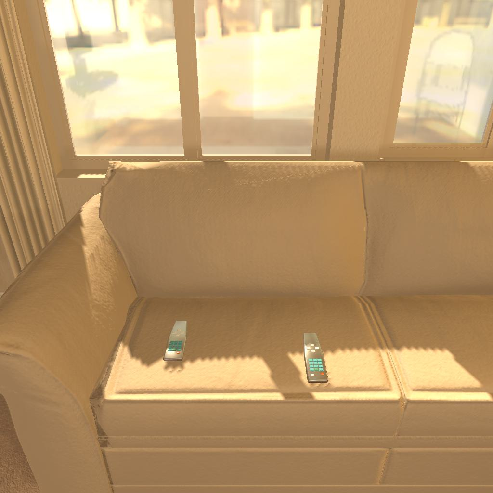

---------------------------------------------------------task: 7---------------------------------------------------------
--------------------------------------------------------------------------------------------------------------------------------------------------------------------
--------------------------------------------------------------------------------------------------------------------------------------------------------------------
Step:--------------------------------------------------------------------------0-------------------------------------------------------------------------------
----------------------------------------
VLM Prompt:
Image1:
**Instruction**
1. Analyze the provided images to identify all visible household objects and compare the difference between images (e.h. whether the object is opened or not and taken on hand or not), focusing on those relevant to the task description "put a creditcard in coffeetable."
2. Use the analysis of images and the task hint "The agent must find an object of the desired type, pick it up, find the correct location to place it, and put it down there." to answer the question: what is the most reasonable action in the choices for the task description "put a creditcard in coffeetable"?
3. Decide and write the answer using the template: The answer is: (i): , where i is the real number. If there is no desired object in images, search every place based on **Initial Observation** to find the object. And if no one is exactly correct, choose a similar answer.
**Initial Observation**
You are in the middle of a room. Looking quickly around you, you can see armchair (1-2), dresser (1), garbagecan (1), cabinet (1-4), drawer (1-4), coffeetable (1), sidetable (1), sofa (1)
**Answer Choices**
(1): go to armchair 1
(2): go to armchair 2
(3): go to dresser 1
(4): go to garbagecan 1
(5): go to cabinet 1
(6): go to drawer 1
(7): go to drawer 2
(8): go to cabinet 2
(9): go to drawer 3
(10): go to cabinet 3
(11): go to drawer 4
(12): go to cabinet 4
(13): go to coffeetable 1
(14): go to sidetable 1
(15): go to sofa 1
**Answer**
Let's think step by step by following the instructions.
----------------------------------------
----------------------------------------
Original Response:
Image Analysis:
- There are two remote controls on the sofa.
- No other objects are visible in the image.
Task Analysis:
- The task is to put a credit card on the coffee table.
- To complete this task, the agent must find a credit card, pick it up, and place it on the coffee table.
Initial Observation:
- The initial observation lists various furniture items where a credit card might be found.
Decision:
- Since there are no credit cards visible in the provided image, the agent must search for one.
- A credit card is unlikely to be found in the garbage can or with larger objects like armchairs.
- Credit cards are typically small and flat, so they might be placed on surfaces like tables or inside drawers.
The answer is: (13): go to coffeetable 1. Since the task is to put a credit card on the coffee table, the agent should first go there to check if the credit card is already on the surface or nearby. If not found, the agent can proceed to search other locations mentioned in the initial observation.
----------------------------------------
----------------------------------------
>>> Refine Original VLM Response and Get Pure Action: go to coffeetable 1
----------------------------------------
-----------------------------------------------------------------
Running time: 12.679585933685303 seconds
Total Money: 2.8892800000000007
-----------------------------------------------------------------
-----------------------------------------------------------------
Text Observation:You arrive at loc 12. On the coffeetable 1, you see a box 1, a remotecontrol 1, and a lightswitch 1.
-----------------------------------------------------------------
UNSUCCEED